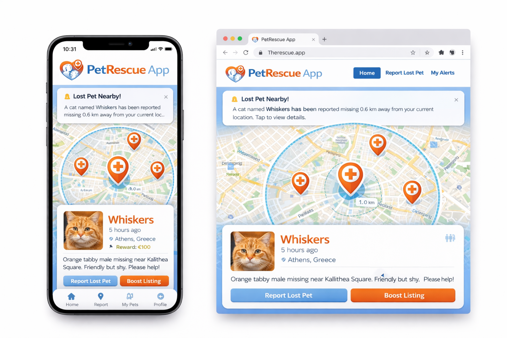
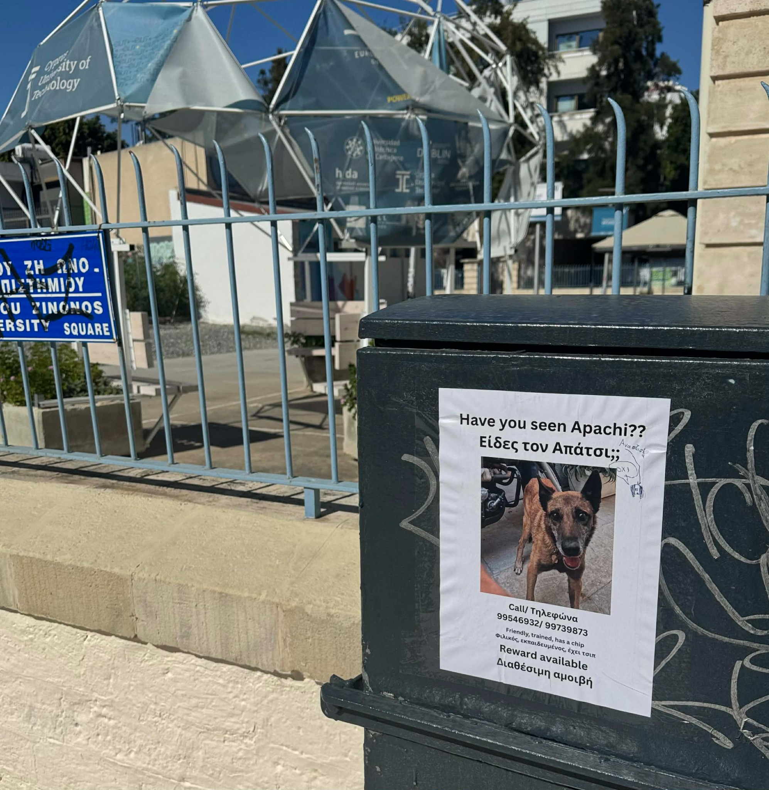

Ψηφιακή πλατφόρμα ειδοποίησης για χαμένα κατοικίδια
Άμεση ενημέρωση, χάρτης, γεωγραφική ακτίνα και ειδοποιήσεις σε πραγματικό χρόνο.
Μια σύγχρονη web εφαρμογή που αντικαθιστά τις παραδοσιακές αφίσες με στοχευμένη, γρήγορη και οργανωμένη ψηφιακή αναζήτηση χαμένων κατοικιδίων.
01
Τίτλος ιδέας
Ψηφιακή πλατφόρμα άμεσης ειδοποίησης για χαμένα κατοικίδια
Σύντομη περιγραφή
Η εφαρμογή επιτρέπει στον ιδιοκτήτη να καταχωρεί άμεσα αγγελία για χαμένο κατοικίδιο, με φωτογραφία, περιγραφή, τοποθεσία, πιθανή αμοιβή και στοιχεία επικοινωνίας.
Η αγγελία εμφανίζεται πάνω σε διαδραστικό χάρτη και οι χρήστες που βρίσκονται κοντά στην περιοχή εξαφάνισης λαμβάνουν ειδοποίηση για να βοηθήσουν στον εντοπισμό.

02
Το πρόβλημα που λύνει
Από την αργή αφίσα στη στοχευμένη ψηφιακή ειδοποίηση

Σημερινά προβλήματα
- Η ενημέρωση του κοινού γίνεται με καθυστέρηση.
- Οι αφίσες έχουν μικρή γεωγραφική εμβέλεια.
- Δεν υπάρχει άμεση ειδοποίηση σε κοντινά άτομα.
- Η πληροφορία δεν οργανώνεται κεντρικά.
- Η προώθηση της αγγελίας είναι δύσκολη και αποσπασματική.
Κρίσιμο σημείο:
Ο χρόνος είναι καθοριστικός. Όσο καθυστερεί η ενημέρωση, τόσο μειώνονται οι πιθανότητες εντοπισμού του ζώου.
03
Βασική λειτουργία
Πώς λειτουργεί η εφαρμογή
Ο χρήστης δηλώνει ότι έχασε το κατοικίδιό του.
Συμπληρώνει είδος, φωτογραφία, όνομα, περιγραφή, περιοχή, ώρα, reward και στοιχεία επικοινωνίας.
Η αγγελία εμφανίζεται άμεσα στον χάρτη.
Ορίζεται ακτίνα αναζήτησης, π.χ. 1 ή 2 χιλιόμετρα.
Κοντινοί χρήστες λαμβάνουν ειδοποίηση σε πραγματικό χρόνο.
Όποιος δει το ζώο μπορεί να επικοινωνήσει ή να στείλει πιθανό σημείο εντοπισμού.
Προαιρετικά, ο ιδιοκτήτης ενεργοποιεί πληρωμένη προώθηση για μεγαλύτερη προβολή.
04
Ενδεικτικά χαρακτηριστικά υλοποίησης
Τεχνικές και λειτουργικές δυνατότητες
Διαχείριση χρηστών
Εγγραφή, σύνδεση και ασφαλής διαχείριση λογαριασμών.
Αγγελίες & Χάρτης
Δημιουργία αγγελίας και προβολή σε map interface με φίλτρα.
Location-based alerts
Ειδοποιήσεις βάσει τοποθεσίας σε κοντινούς χρήστες.
Αναφορές θεάσεων
Υποβολή αναφορών από χρήστες που είδαν το ζώο.
Κατάσταση “Βρέθηκε”
Επισήμανση και αυτόματη απενεργοποίηση ενεργών ειδοποιήσεων.
Έλεγχος αξιοπιστίας
Πιθανή επιβεβαίωση στοιχείων για μείωση ψεύτικων αγγελιών.
Boost listing
Πληρωμένη προώθηση για υψηλότερη προβολή αγγελίας.
Responsive σχεδίαση
Ομοιόμορφη εμπειρία σε υπολογιστή, tablet και κινητό.
05
Οπτικό πρωτότυπο
Responsive web εμπειρία με mobile-first λογική
06
Καινοτομία και επιχειρηματική διάσταση
Όχι απλά αγγελίες, αλλά ένα ολοκληρωμένο ψηφιακό οικοσύστημα
Καινοτομία / Αξία
- Συνδυασμός γεωεντοπισμού και διαδραστικού χάρτη
- Ειδοποιήσεις σε πραγματικό χρόνο
- Στοχευμένη ενημέρωση κοντινών χρηστών
- Κεντρική οργάνωση πληροφορίας
- Δυνατότητα προώθησης αγγελίας
Οικονομική / πρακτική προοπτική
- Δωρεάν βασική καταχώριση
- Πληρωμένη προβολή αγγελιών
- Συνεργασίες με κτηνιάτρους και pet shops
- Συνεργασία με φιλοζωικές οργανώσεις
- Χορηγούμενες εμφανίσεις και υποστηρικτικές υπηρεσίες
07
Προτεινόμενη πορεία υλοποίησης
Πρώτα web εφαρμογή, μετά επέκταση σε mobile
Φάση 1
Responsive Web App
Η πιο σωστή επιλογή για πτυχιακή, επειδή επιτρέπει γρήγορη ανάπτυξη, εύκολη παρουσίαση και καλύτερη οργάνωση backend, βάσης δεδομένων, χάρτη και λογικής ειδοποιήσεων.
Φάση 2
Μελλοντική επέκταση
Με σωστό αρχιτεκτονικό σχεδιασμό, η εφαρμογή μπορεί αργότερα να μετατραπεί σε mobile app ή Progressive Web App με εμπειρία κοντά σε native εφαρμογή.
Συμπέρασμα
Το PetRescue App αποτελεί μια ρεαλιστική, κοινωνικά χρήσιμη και τεχνικά ενδιαφέρουσα πτυχιακή ιδέα, συνδυάζοντας web ανάπτυξη, γεωεντοπισμό, real-time ενημέρωση, διαδραστικό UI και επιχειρηματική προοπτική.